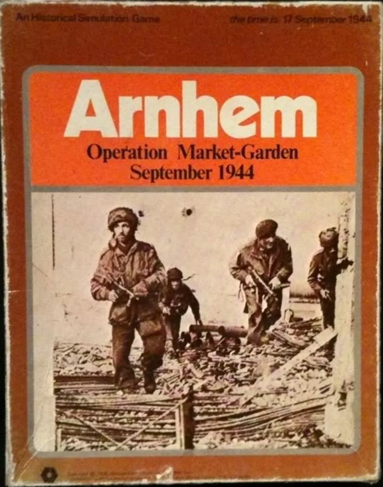
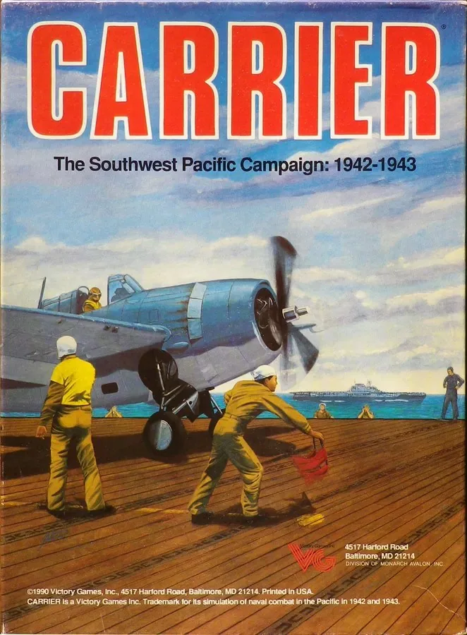
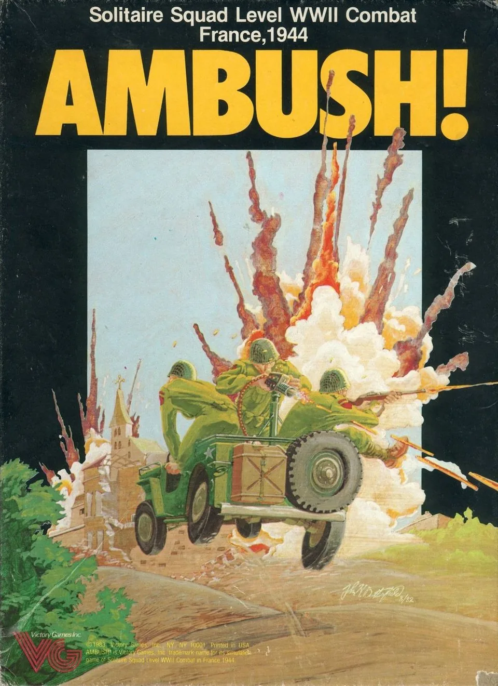

GameBoxHeroes
Les boîtes de jeux des classiques du wargame
The game boxes of classic wargames
En solo ou à deux, en ligne Solo or head-to-head, online


Les boîtes de jeux des classiques du wargame
The game boxes of classic wargames
En solo ou à deux, en ligne Solo or head-to-head, online